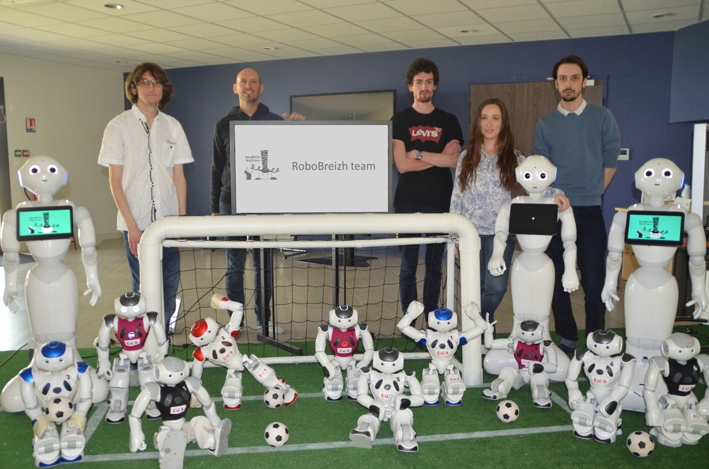
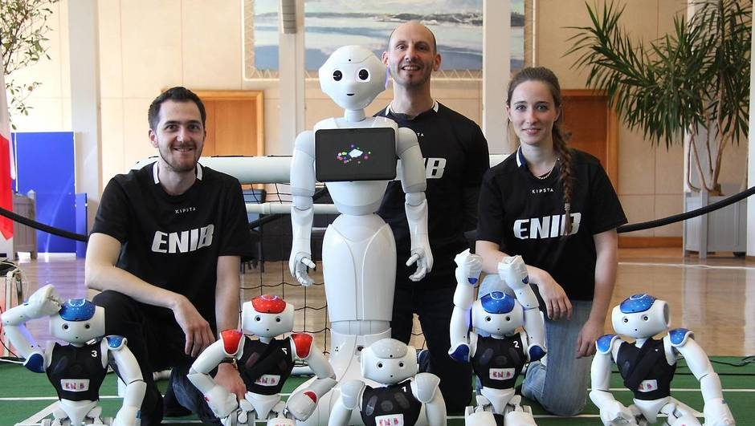

Team
RoboBreizh
I founded and lead RoboBreizh, a French–Australian team competing in RoboCup@Home — the largest international competition for autonomous service robots. Our approach is fully embedded human–robot interaction: perception, language understanding and reasoning running on social robots such as Pepper and NAO. RoboBreizh won the Social Standard Platform League world title in 2022 and 2023.

RoboCup@Home SSPL
2020 – 2023
at ENIB, Brest
Flinders University
Track record
-
2023World champion — 1st place, RoboCup@Home SSPLRoboCup 2023, Bordeaux, France · ENIB / IRL CNRS CROSSING / Flinders University
-
2022World champion — 1st place, RoboCup@Home SSPLRoboCup 2022, Bangkok, Thailand
-
20213rd place, RoboCup@Home SSPLRoboCup Worldwide 2021 (virtual competition)
-
2020Best Performance Award — RoboCup@Home Education Online ChallengeStandard Platform, Pepper open category


Research behind the robots
Every RoboCup@Home task — following a person, tidying a room, serving guests — is a test of interaction in a real home. Our architecture combines five ROS modules (perception, navigation, reasoning, movement and interaction) and runs entirely on board the robot.
Our contributions include real-time scene-graph generation for robot perception, natural-language understanding for spoken commands, speaker recognition, movement learning from demonstration, and virtual-reality environments to test behaviours safely before deployment.

A launchpad for careers
RoboBreizh is also a training ground. Former PhD students and engineers of the team now work in humanoid and social robotics at companies such as PAL Robotics and Enchanted Tools, and Maëlic Neau co-founded Asim, a humanoid-robot safety start-up selected by Y Combinator in 2026.
In the press
- Ouest-France · 2026A start-up born at ENIB joins Y Combinator
- Le Monde · 2023À la RoboCup, des robots dopés à l'intelligence artificielle
- M6 Le 19:45 · 2023TV report on the team (7 July 2023)
- CNRS Le Journal · 2022RoboCup 2022 : une équipe de Brest championne du monde
- France Inter · 2022Un robot breton champion du monde de la RoboCup